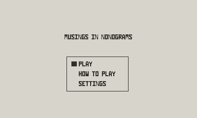
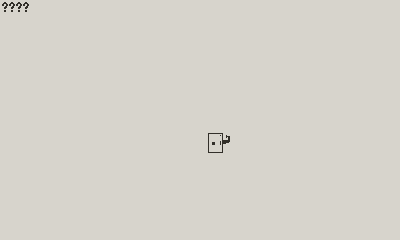
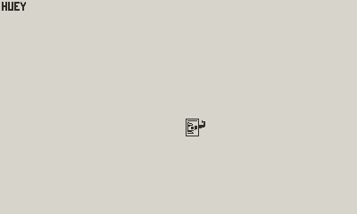

While I haven’t posted in a couple of weeks, I’ve been making (very slow) progress on things.
I don’t quite have this all working the way I want, with the outlines and everything I was showing in 003-lean-into-it devlog, I still have this looking better than what it was.
Right now, you’re able to select puzzle regions off of the collage, and then after solving the puzzle, completing (and saving) that portion of the collage. Here is me working on the three sections of the Huey prize



What I need to do next, is something like:
Given a player just completes the last puzzle for a prize When they get on the puzzle select/collage screen Then go ahead and show them the prize and the blurb
I think some of this can just slot into the code I was doing before. I think the way for this to really be something pleasing would be, like: all puzzles unrelated to the prize fade out, and these puzzles, as a unit, drift towards the center; then the prize fades in.
Or something like that.
Really I just need to get this half-working so I can produce a build and beg everyone and anyone reading this to give it a shot and tell me if it feels better.
Maybe I need to start giving myself some deadlines and if that would help keep things on track…